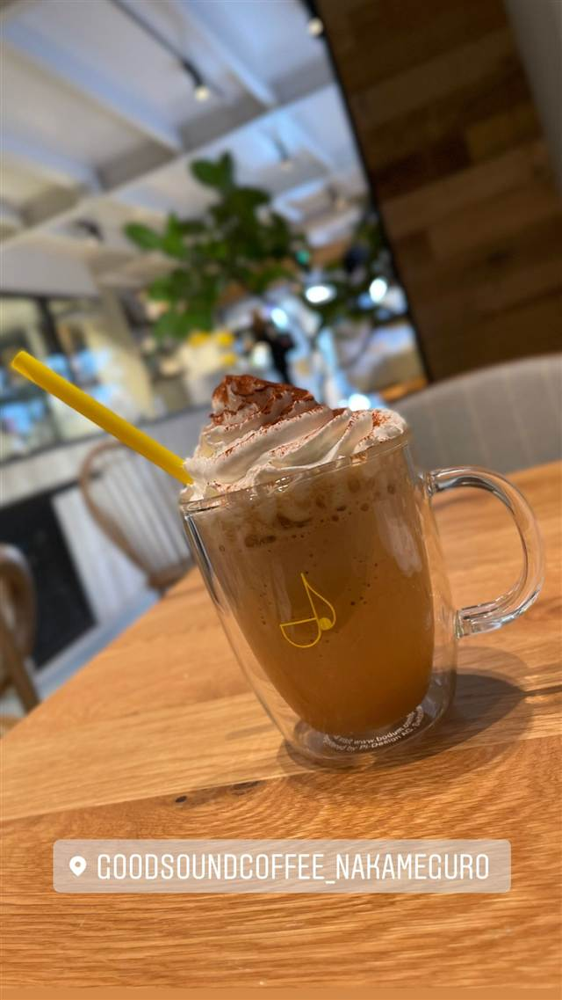

GOOD SOUND COFFEE 中目黒店
エイベックス手掛け、60本のスピーカーに包まれる世界初の音響カフェ
GOODSOUNDCOFFEE_NAKAMEGURO
音楽で空間を演出する「世界初」の360度サラウンド音響カフェ。エイベックスとカルムデザインが手掛け、60本のスピーカーによる立体音響の中、小川珈琲の豆を使ったコーヒーが楽しめる。中目黒店は2021年11月オープン。
TRIVIA
へえ、という話
- 音楽レーベルのエイベックスが店舗音響設計に関わっている。
- 「世界初」を謳う360度音響カフェとして展開。
REVIEWS
みんなの声
3.38食べログ
「コーヒーの質と作業向きの雰囲気」に注目
- コーヒーの味わいを評価する声がある一方で品質にばらつきがあるという指摘もある
- 天井が高く開放的でスタイリッシュな雰囲気を評価する声が非常に多い
- 作業目的の客が多くコンセント席は早い時間から埋まりやすいという声がある
食べログ 口コミ373件
| 創業 | 2020年4月1号店開業、中目黒店は2021年11月17日オープン |
|---|---|
| 看板 | 360度サラウンド音響に包まれるコーヒー体験、小川珈琲（京都）のオーガニック豆を使用したコーヒー |
| こだわり | エイベックスとカルムデザインの協業により、60本のスピーカーと12chサラウンドシステムを導入し、店内を音で満たす「世界初」の音空間カフェ。 |
| どこから | 都心 |
| 予算 | 昼 ¥1,000～¥1,999 夜 ¥1,000～¥1,999 |
| 場所 | 中目黒駅 東京都目黒区上目黒1-6-5 |
| 注意 | 中目黒駅から徒歩3分。Wi-Fi・電源席あり。 |
食べたもの：ラテ / フラッペドリンク
NEARBY
近い店・同じ系統の店
-
 ★
コーヒー 新宿三丁目
AALIYA COFFEE ROASTERS
37年続く本店譲りのフレンチトーストを並ばず味わえる
昼 ¥1,000～¥1,999 夜 ¥1,000～¥1,999
★
コーヒー 新宿三丁目
AALIYA COFFEE ROASTERS
37年続く本店譲りのフレンチトーストを並ばず味わえる
昼 ¥1,000～¥1,999 夜 ¥1,000～¥1,999
-
 ★
コーヒー 保田駅
音楽と珈琲の店 岬
鋸山の湧き水でコーヒーを淹れ、その水は店の外に持ち出せない
昼 ～¥999
★
コーヒー 保田駅
音楽と珈琲の店 岬
鋸山の湧き水でコーヒーを淹れ、その水は店の外に持ち出せない
昼 ～¥999
-
 ★
焼肉 中目黒駅
びーふてい 中目黒店
1988年創業、和牛一頭買いで味わう名物ガツン焼き
夜 ¥6,000～¥7,999
★
焼肉 中目黒駅
びーふてい 中目黒店
1988年創業、和牛一頭買いで味わう名物ガツン焼き
夜 ¥6,000～¥7,999
-
 ★
焼肉 中目黒
小野田商店
中目黒の路地裏、七輪で焼く500円前後のホルモン
夜 ¥3,000～¥3,999
★
焼肉 中目黒
小野田商店
中目黒の路地裏、七輪で焼く500円前後のホルモン
夜 ¥3,000～¥3,999
-
 ピザ 中目黒駅
聖林館（セイリンカン）
マルゲリータとマリナーラの2種のみ、国産小麦を長期熟成
昼 ¥4,000～¥4,999 夜 ¥4,000～¥4,999
ピザ 中目黒駅
聖林館（セイリンカン）
マルゲリータとマリナーラの2種のみ、国産小麦を長期熟成
昼 ¥4,000～¥4,999 夜 ¥4,000～¥4,999
-
 ピザ 中目黒駅
ピッツエリア エ トラットリア ダ・イーサ（Pizzeria e trattoria da ISA）
世界ピッツァ選手権優勝のナポリピッツァ職人が焼くマルゲリータ
昼 ¥2,000～¥2,999 夜 ¥3,000～¥3,999
ピザ 中目黒駅
ピッツエリア エ トラットリア ダ・イーサ（Pizzeria e trattoria da ISA）
世界ピッツァ選手権優勝のナポリピッツァ職人が焼くマルゲリータ
昼 ¥2,000～¥2,999 夜 ¥3,000～¥3,999